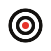

Brand · mark · direction compare
Same wordmark throughout (the red period always carries the signal-red). Compare the mark in the real nav and as a browser-tab favicon.
The MAYA monogram: familiar letterform, streamline curve. Warm and cohesive with the logotype.
Loewy's Lucky Strike target. The most distinctive and scalable; red center is the signal-red. Tradeoff: a common shape.

studiomaya.ioLet the logotype stand alone; the favicon becomes a single red dot (echoing the period). The most minimal, most confident option.